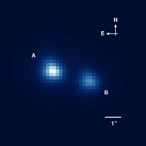
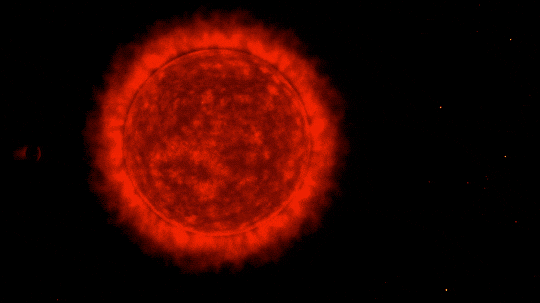
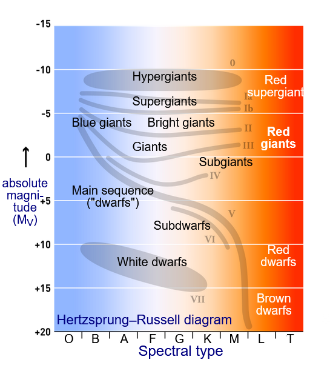

A low mass star is a star that has a mass less than eight times that of our Sun. The smallest star (that can be considered a star) is EBLM J0555-57Ab, which is 8.1% the mass of the Sun.

PHOTO BY ESO - ON THE LEFT IS EBLM J0555−57A, ON THE RIGHT IS EBLM J0555−57B. THE ONE OF THE LEFT IS AN ECLIPSING BINARY, MEANING IT IS COMPOSED OF TWO GRAVITATIONALLY BOUND STARS. IT CONTAINS THE SMALLEST KNOWN STAR, EBLM J0555−57Ab.
BEGINNING
A star forms from clouds of dust, in a "stellar nursery". This nursery is a nebula,
which is a collection of gas and dust in space (you will soon see where these come from).
These stellar nurseries are cold, which causes the gases
in these molecular clouds to "clump". These clumps can collect more matter or collide with each other, increasing its mass and creating a stronger
gravitational force. Stars formed this way are found in stellar clusters, and are very rarely alone (low mass stars are usually found with other low mass stars). Most stars are low-mass because for stars to get any larger special conditions
need to occur, such as higher pressure and temperature. As these clumps increase mass, friction causes them to heat up, leading to the next phase in the star's life.

PHOTO FROM BRITANNICA - NGC 6705.
EARLY LIFE
The star has reached infancy. We call this a protostar. Protostars form from their previous dense cores (above). As it collects mass from its parent cloud, the force of its gravity overcomes the gas and magnetic pressure that balances against gravity, causing it to collapse into itself. The gas that collapses in the center of the core forms a low-mass protostar, and then a protoplanetary disc, which is a disc of gas and dust that surrounds the star. The temperature at the centre of this star is not as hot as it could be yet, as hydrogen is not at this point fusing with itself. This then changes when hydrogen-2 fuses with hydrogen-1 to create helium-3 (fancy that) through a chain reaction called the proton-proton chain. The heat from this fusion reaction inflates the protostar, and the star goes into the main sequence stage of its life.

PHOTO FROM NASA
MAIN SEQUENCE
Here, in the stars adult age, is where the main differences between high and low mass stars start to become apparent. Low mass stars live for much longer than their high-mass counterparts, burning for billions or even trillions of years. This is because higher mass stars have to exhaust more of its fuel to keep itself from collapsing under its weight. Lower mass stars also burn dimmer and cooler - burning more fuel would increase the luminosity and temperature of the star. They burn red or orange due to their low temperature. As nuclear fusion occurs through the proton-proton chain, the star's core shrinks and heats up, and the star becomes brighter.

PHOTO OF A MAIN SEQUENCE STAR.
GIANT STAGE
Just like humans, some stars inflame and become red when reaching the end of their life. Low mass stars become red giants, which as the name suggests, are much larger and redder than what they were during main sequence. At this later stage of a star's life, the hydrogen that has been fusing into helium has been spent up, causing the core to collapse, as the energy produced by that fusion is what balanced against the force of gravity. This core collapse increases its temperature and pressure, which causes the star to expand. At this point, the core shrinks and is composed of helium, which fuses into carbon. Red giants are unstable and pulsate, which expels part of its atmosphere periodically.
GIF OF RED GIANT + PLANET FROM NASA: NOTE THAT THE MAIN DIFFERENCE BETWEEN A RED GIANT AND RED SUPERGIANT IS ITS LUMINOSITY (AND SIZE)
HERE, THE LOWER THE ABSOLUTE MAGNITUDE IS (THE FURTHER UP THE GRAPH), THE GREATER THE LUMINOSITY (COURTESY OF WIKIPEDIA).
FINAL FATES
When a star dies, it explodes. The core of the red giant becomes hotter, reaching 100 million Kelvin, and helium fuses into carbon. The core expands when the helium begins to heat the core further, causing a helium flash. This expansion of the core lowers its temperature and the outer layers contract. After about 100 million years, the star fuses all of its helium into carbon. The star becomes a red giant again, and its outer layers (its helium shell around the core, and its hydrogen shell around the outside) continue to expand. Eventually, gravity loses against the force of outward pressure, ejecting the outer layers of the red giant. This now cloud of gas and dust is called a planetary nebula (which has no relation to planets).
What is left of this expulsion is a star remnant. For low mass stars, the remaining core of the star becomes a white dwarf. This white dwarf no longer burns, and cools over billions of years. And thus is the lifecycle of a star: ashes to ashes, dust to dust.